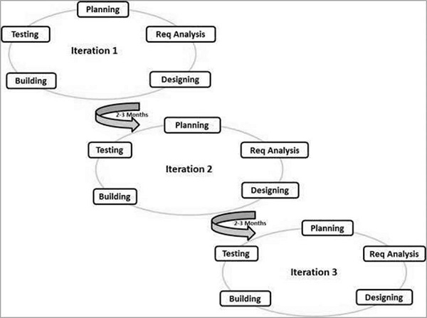

Agile Model
This model is a combination of iterative and incremental process models with focus on process adaptability and customer satisfaction by rapid delivery. Agile methods break the product into small incremental builds, which take place over one to three weeks and involve stages of the SDLC such as planning, analysis, design, development and testing.
The four key principles of agile development include...
- Individuals and Interactions: Self organisation is important by so are interactions such as pair programming
- Working Software: Working demos are the best means of customer communication
- Customer Collaboration: Continuous customer interaction is important to enable the maintenance and development of requirements
- Responding to Change: Agile is focused on quick response to change and continuous developments
Agile is based on adaptive software development methods, rather than predictive methods. Predictive methods require detailed and strict planning and a forecast of development over the next few months.
There is no detailed planning in adaptive methods. Development is feature driven and teams adapt to the changing product dynamically. Testing occurs frequently to reduce risk.
When to use
- When Changes to product are common. Frequency of increments makes implementing changes cheap as low risk
Advantages
- Promotes team work
- Rapid development of easily demonstrated functionality
- Low resource requirements
- Easy to change requirements
- Minimal rules, documentation easily employed
- Short planning stages
- Easy to manage
- Gives flexibility to developers
Disadvantages
- Not suitable for complex dependencies
- Risky in regards to sustainability and maintainability
- Will not work without an overall plan, agile leader and agile project manager practice
- Depends on good customer interactions. Unclear communication may lead teams in the wrong direction
- Challenging to include new team members due to limited documentation
(Sources:
Tutorials point: SDLC - Agile Model
International Software Testing Qualifications Board: What is Agile model – advantages, disadvantages and when to use it?
)
Updated:18/07/2017